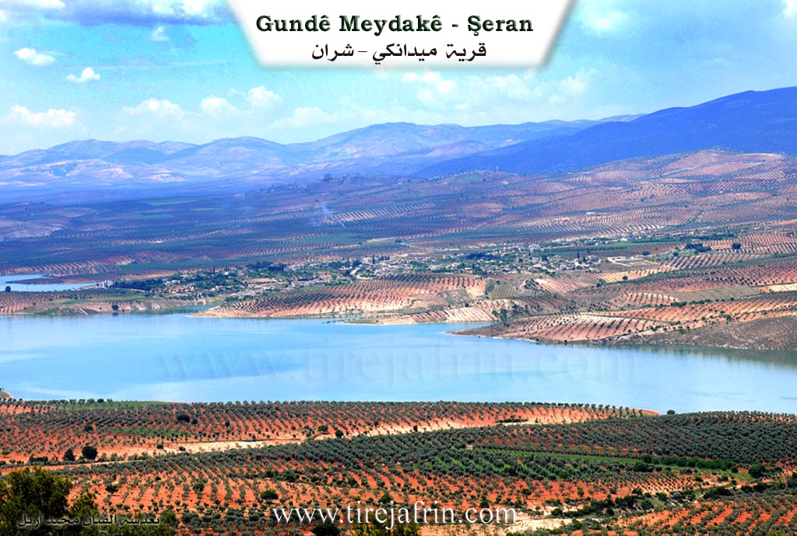
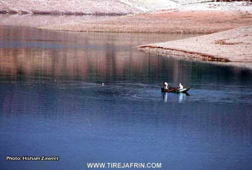
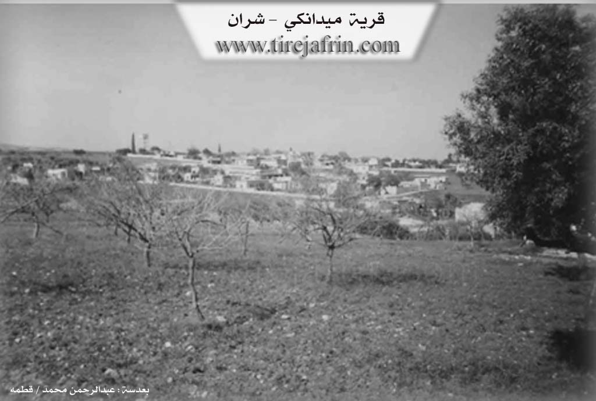

General Information
Nahiya (Subdistrict)
Şera
Also Known As
Al-Maydan, Medanki, Meduno, Meydan Kêm, Meydanekê, Meydankê, Meydano Semolo, Meydankey, Mêdankê, ميدانكي, ميدونو
Families, Clans, etc.
Benk / Henan, Cebr, Ebdo Kare, Ebdulrehman (Seedellah), Emîr, Hec Ehmed, Hec Osman, Kêl Eliya, Mihemed Ehmed, Ousko, Rehmano, Semko, Xûceler, Çapero, Îmro, Şêx Elî, Şêx Mihemed, Şêx Osman, Şêx Îsa, Şêxo

Photos




Basic Information about Meydankê
Source: Ax û Welat
Foundation Date/Period: 300 years ago
Hills: Naza, Bilbil
Shrines: Şêx Îs, Şêx Ebdulrehman, Nebî Hûrî
Trees: Kaçkar
Other Landmarks: Çemê Meydankê, Bendava Efrînê, Bongik, Başiq
Summaries
I. Summary from TirejAfrin Site (English) of Meydankê
Source: https://www.tirejafrin.com/site/kura%20afrin%20%20sheran%20-%20Medanke.htm
Meydankê (The Square)
According to the book Çiyayê Kurmênc (Efrîn): A Geographical Study: Meydankê, Meydank, El-Meydan /4969 inhabitants - 255 hectares - 10km - 360m elevation/:
The name comes from Meydan, meaning "square" or "arena" in the Kurdish language.
The village was formed of two parts: Upper (Jorîn) and Lower (Jêrîn). It is a large village that transformed into a beautiful tourist site after the formation of the Gola Meydankê (Meydankê lake), and commercial shops multiplied within it. It is one of the prosperous villages, containing blacksmithing and carpentry workshops, pharmacies, restaurants, and a health center. There used to be the Şelaleyên Meydankê (Meydankê waterfalls) on the course of the Efrîn river, and beside it was a watermill that was still operating, in addition to a bridge from the Ottoman era; all of these were submerged by the waters of the lake.
According to the book Efrîn... Her River and Her Green Hills: Meydankê is a village in Çiyayê Kurmênc following the township of Şera in the Efrîn region, Aleppo governorate (4725 inhabitants). It is a large village located in the northern part of Çiyayê Kurmênc on the southeastern slope of a limestone height near a watercourse descending east toward the Efrîn river. Its soil is clay-based. It is 10 km away from Şera toward the northwest.
It is bordered to the north by a fertile plain planted with olive trees and the village of Naza or Şaxê; to the south by the valley and course of the Efrîn river (or the Şelaleyên Meydankê and the old Pira Romayî (Roman bridge) on the river, currently submerged by the waters of the Bendava 17 Nîsanê (17 April dam) lake) and the village of Kûbelê; to the east by the slope and valley of the Efrîn river, Elî Bazanlî, and Qerqîna Mezin; and to the west by the slope, valley, Bendava 17 Nîsanê, the Riya Bilbil-Efrîn-Heleb (Bilbil-Efrîn-Heleb road), the village of Kemrûk, and Şorbe or Bêsi.
The number of its houses is approximately 300, and its age is about 500 years. Its old houses are of stone and mud with flat wooden roofs, while the modern ones are concrete, following the paved road west of the village. It has an electricity network and drinking water from a network fed by an artesian well dug in the village of Naza or Şaxê belonging to the state. There is a telephone center, a primary and middle school, a mosque, and a newly created municipality building. Several tourist cafes exist near the river, and there are several paved streets, especially the main street extending from the formerly existing Pira Romayî (Roman bridge) on the river to the village of Meydankê from the northern side. Also located near it on the western side is the body of the Bendava 17 Nîsanê.
The village contains several service shops, and currently, it has become a connection point between the villages of the township and the township of Bilbil due to its location in the center of these villages. It has modern olive presses and several concrete block factories. It is connected to the center of the township and region by a winding paved road. The farm of Dûdêrî is administratively attached to it. The residents of the village work in the cultivation of olives, grains, and vegetables, and in raising sheep.
As for the Şelaleyên Meydankê (Meydankê waterfalls), they are located in the middle course of the Efrîn river at a gorge of limestone rocks with steep slopes; they are currently submerged within the dam's waters. The formation of the waterfalls is due to the hardness of the limestone rocks in the riverbed, leading to a difference in the river's slope level of 5 meters over a stretch of 80 meters. The locals estimated the body of the waterfall to be 60 meters long. An artificial dam was added to it to raise the water level and expand the area of the lake formed behind it. An open water channel 200 meters long was diverted from the lake to operate a watermill that works to this day, in addition to exploiting the lake to irrigate neighboring orchards. A stone bridge from the Roman era was built over the river between the waterfalls and the mill, now submerged in the lake's water. The state undertook reforestation of the slopes, which encouraged the people of the village and towns to visit for picnics, and all roads to the waterfalls are paved.
The Bendava 17 Nîsanê (17 April dam) was inaugurated in 2004 by the Prime Minister Engineer Mihemed Nacî Etrî. The water of this dam is utilized to irrigate the lands of the Efrîn, Cindirês, and Cûme plains up to the village of Mela Xelîl near the Turkish border, and to draw drinking water for the cities of Efrîn and Ezaz and the villages adjacent to the water line.
Bendava Meydankê (17 April)
On the way back from visiting the ruins of Qûris (Nebî Hûrî), or if you are coming from Heleb via the Riya Kefer Cenê-Meydankê (Kefer Cenê-Meydankê road), one must view the lake formed behind the Bendava 17 Nîsanê (17 April dam). It is 15 km long toward the east reaching the village of Wêrkan, with an average width of 1 km. It stores 190 million cubic meters of water behind it, sufficient to reclaim 30,000 hectares of agricultural land while generating electricity with a capacity of 18 megawatts.
The waters did not submerge the two Roman bridges, the only remaining ones in Syria from the Roman era, until recently. The Meydankê bridge has disappeared, and the beautiful waterfalls have gone past the point of return, and the watermill that was powered by the waters of the Efrîn river has been lost. It would be desirable if the subject of investing in the banks of the new dam lake were studied rationally, establishing environmental reserves to be planted and invested in as rest stops, restaurants, resorts, and the like to activate the tourism movement in the region.
Şelaleyên Meydankê / Formerly
Waterfalls in the course of the Efrîn river, following the township of Şera, Efrîn region, Aleppo governorate. They are located in the middle course of the Efrîn river at an elevation of 10 meters, southeast of the village of Meydankê, at a distance of 1 km at a gorge of limestone rocks with steep slopes. The formation of the waterfalls dates back to the varying hardness of the limestone rocks in the riverbed, which led to a difference in the river's slope level by an amount of 5 meters over a stretch of 80 meters. The locals extended the body of the waterfall to a length of 60 meters, then an artificial dam was added to it with a length of 150 meters, a thickness of 1.5 meters, and a height of 1 meter to raise the water level and expand the area of the lake formed behind it. An open canal 200 meters long was derived from the lake to operate a watermill that was still working until recently, in addition to exploiting the lake water to irrigate adjacent orchards. A stone bridge from the Roman era was built over the river between the waterfalls and the mill and was still used for vehicle crossing. There are also several recreational cafes on the eastern side of the gorge. The state reforested the slopes, which encouraged the people of neighboring villages to frequent it for picnics, especially from the city of Heleb, Efrîn, and neighboring villages. Currently, the waterfalls, the Roman bridge, and the mill have been submerged by the waters of the Bendava 17 Nîsanê, and nothing remains of these antiquities. Several parks have been established around the lake. The road to the waterfalls is paved, but currently, the Meydankê waterfalls do not exist due to their submersion in the lake waters.
Village Mukhtar: Xalid Şêx Îsa
Families in the village:
Şêx Mihemed, Şêx Osman, Şêx Îsa, Şêx Elî, Cebr, Emîr, Ebdo Kare, Şêxo, Mihemed Ehmed, Benk / Henan, Ebdulrehman (Seedellah).
Holders of higher degrees in the village:
Dr. Ebdulqadir Kosa - PhD in Philosophy.
Dr. Ciwan Mihemed Emîr - PhD in Nuclear Physics.
(Source of families from Mr. Ebdulhenan Şêxo Ebû Selah Mîvano)
Information Sources:
- Book: جبل الكرد (عفرين) دراسة جغرافية Çiyayê Kurmênc (Efrîn): A Geographical Study by د. محمد عبدو علي Dr. Mihemed Ebdo Elî.
- Book: عفرين .... نهرها وروابيها الخضراء Efrîn... Her River and Her Green Hills by عبدالرحمن محمد Ebdulrehman Mihemed from the village of Qetme.
- Studies of Navenda Tirej Soft / Ebdulrehman Hacî Osman.
- Some residents of the villages.
Preparation and Execution: Site Manager of Tirej Efrîn: Ebdulrehman Hacî Osman 20/12/2013
II. Summary of Meydankê from Ax û Welat
Source: https://www.youtube.com/watch?v=is_wYIMny9Y
The village of Meydankê, situated in the Şera district of the Efrîn canton, was established approximately 300 years ago. Its foundational history begins with the migration of two siblings, Şêx Salih and his sister Meyrem. According to local oral history shared by Apê Abdulqadir, Şêx Salih originated from Kurdistana Rojhilat and had roots in Iraq and Bexda, descending from the lineage of Abdulqadir Geylanî. During his migration, he initially stayed at Şêx Îs, a location east of Ezaz where the tombs of Şêx Îs and Şêx Ebdulrehman are located. He later moved to the village of Naza near the Bilbil area. There, he married a local woman and was advised to establish his home on a nearby plain or "meydan" populated by Kaçkar trees. This clearing gave the village its name, Meydankê.
The social structure of Meydankê is deeply rooted in the lineage of its founder. Şêx Salih had three sons named Hec Osman, Hec Ehmed, and Xûce. Over the centuries, these lines expanded into the primary families inhabiting the village today. The specific families listed in the documentary include Ousko, Xûceler, Şêx Elî, Kêl Eliya, Semko, Çapero, Îmro, and Rehmano. While the village is historically Kurdish, it serves as a gathering point for diverse communities. The transcript highlights the presence of displaced Arab families from Deyr ez Zor and Heleb, as well as Christian visitors who frequent the area on Sundays.
Meydankê is defined by its relationship with water and is widely regarded as a regional paradise for leisure and tourism. Its most significant landmark is the Bendava Efrînê (also referred to as the Meydankê dam), a massive infrastructure project constructed between 1990 and 2004. The dam spans 14 kilometers, holding water from the Çemê Meydankê and Çemê Efrînê before the river flows toward Cindirês and eventually the Lîwa Îskenderûn.
The village is famous for its scenic beauty and recreational economy. Seven restaurants operate in the area to serve tourists who come to picnic and fish for species like "bûrî" and "kerb." Culturally, the village is home to skilled residents such as the sculptor Apê Mihemed, who crafts figures from stone and wood, and the musician Bavê Şivan, who recounted performing with the late renowned artist Adnan Dilbirîn. The area serves as a strategic crossroads connecting Efrîn to Bilbil, Recû, and Ezaz, with nearby landmarks including Naza, Bongik, and Başiq.
Transcriptions and Subtitles
| Source | Video | Subtitles | Transcript |
|---|---|---|---|
| Ax û Welat 1 | Watch Video | Not Available | View Transcript |
Foundation/Origin Information of Meydankê
Among the families in the village: Al Sheikh Mohammed family, Al Sheikh Othman family, Al Sheikh Issa family, Al Sheikh Ali family, Al Jabr family, Al Amir family, Al Abdah Kareh family, Al Sheikho family, Al Mohammed Ahmed family, Al Bank / Hanan family, Al Abdul Rahman family Sa'dallah.
Source: TirejAfrin Site
Founded by a brother and sister, Sheikh Salih and Meryem. Sheikh Salih, also known as Abdul Qadir al-Jilani, was an ascetic who migrated from Baghdad, Iraq, first settling in the village of Sheikh Isa before his family established Meydankê. The village's social structure is built upon seven founding families—the Ûsika, Xocelera, Şêx Elî, Sabka, Çepera, Îmra, and Rehmana—all descended from Sheikh Salih's three sons.
Source: Ax û Walat Transcript
No specific origin story.
Source: Afrin 366 Transcript
Possible Village Name Meaning of Meydankê
Maydan means the square in the Kurdish language.
Source: TirejAfrin Site
Also known as Meydano Semolo.
Source: Afrin 366 Transcript
V. Links
- Tirej Afrin:
https://www.tirejafrin.com/site/kura%20afrin%20%20sheran%20-%20Medanke.htm - Ax û Welat:
https://www.youtube.com/watch?v=q4plMUPczJo - Jawlat:
https://www.youtube.com/watch?v=V56JCp0Sh-s - Local FB page:
https://www.facebook.com/mirxez - Video:
https://www.youtube.com/watch?v=PI-6MEbeWjI - Link:
https://www.youtube.com/watch?v=2fckk95WW30 - Link:
https://www.youtube.com/watch?v=67IR7t9_rIw - Link:
https://www.youtube.com/watch?v=64s05u8dcT8 - Link:
https://www.youtube.com/watch?v=o71rM7znoFI - Link:
https://www.youtube.com/watch?v=KRzJ1vwGKyA - Link:
https://www.youtube.com/watch?v=_kqRw1DkPis - Ax û Welat:
https://www.youtube.com/watch?v=is_wYIMny9Y